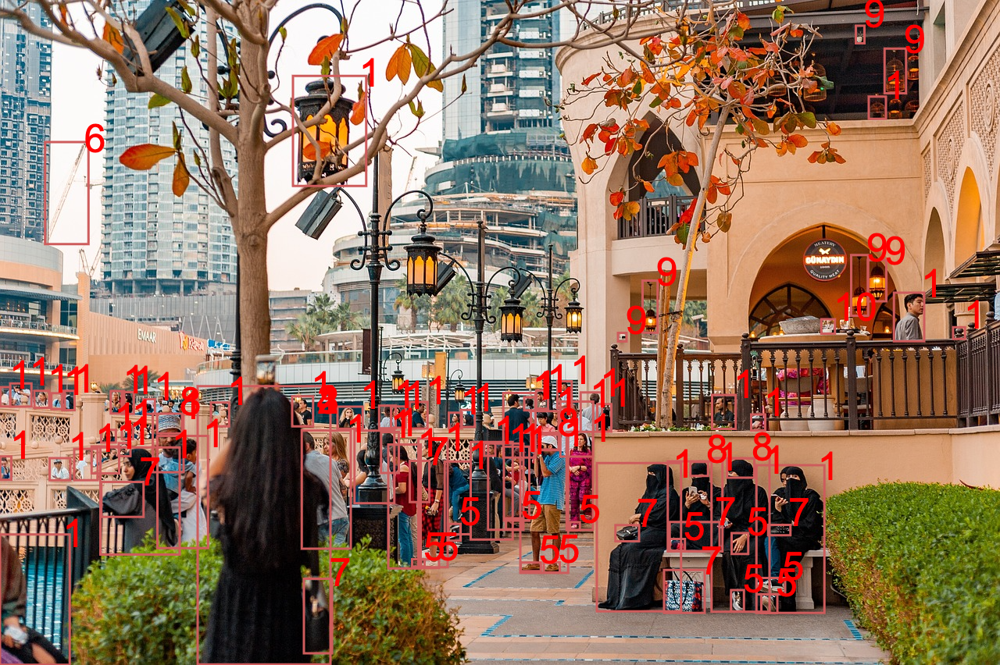

Όραση υπολογιστών
Επιλογή μιας εικόνας

Αστικό τοπίο
| Επισήμανση | Εμπιστοσύνη |
| Πόλη | 100% |
| Σορτς 1 | 99% |
| Παπούτσι 2 | 99% |
| Άτομο 3 | 99% |
| Τσάντα | 97% |
| Τσαντάκι 4 | 96% |
| Σανδάλι 5 | 90% |
| Επισήμανση | Εμπιστοσύνη |
| Σκύλος 6 | 90% |
| Κατοικίδιο ζώο | 86% |
| Τροχός 7 | 85% |
| Ποδήλατο 8 | 80% |
| Όχημα | 78% |
| Κολόνα φωτισμού | 75% |
| Σκοινί | 60% |
Εργοτάξιο
| Επισήμανση | Εμπιστοσύνη |
| Άτομο 1 | 100% |
| Κράνος 2 | 100% |
| Κατασκευές 3 | 76% |
| Ενήλικας 4 | 99% |
| Άνδρας 5 | 99% |
| Επισήμανση | Εμπιστοσύνη |
| Φορτηγό 6 | 88% |
| Υποδήματα 7 | 88% |
| Τροχός 8 | 83% |
| Γυαλιά ασφαλείας | 94% |
| Προειδοποιητική πινακίδα | 31% |
Φρούτα και λαχανικά

| Επισήμανση | Εμπιστοσύνη |
| Μπανάνα 1 | 100% |
| Φρούτο | 100% |
| Πορτοκάλι 2 | 85% |
| Αχλάδι 3 | 84% |
| Κοτόπουλο 4 | 78% |
| Λεμόνι | 62% |
| Μήλο 5 | 50% |
| Επισήμανση | Εμπιστοσύνη |
| Καλάθι | 55% |
| Γκρέιπφρουτ | 53% |
| Πιπεριά | 53% |
| Λάιμ | 52% |
| Κολοκυθάκια | 52% |
| Τζίντζερ | 51% |
| Αβοκάντο | 51% |